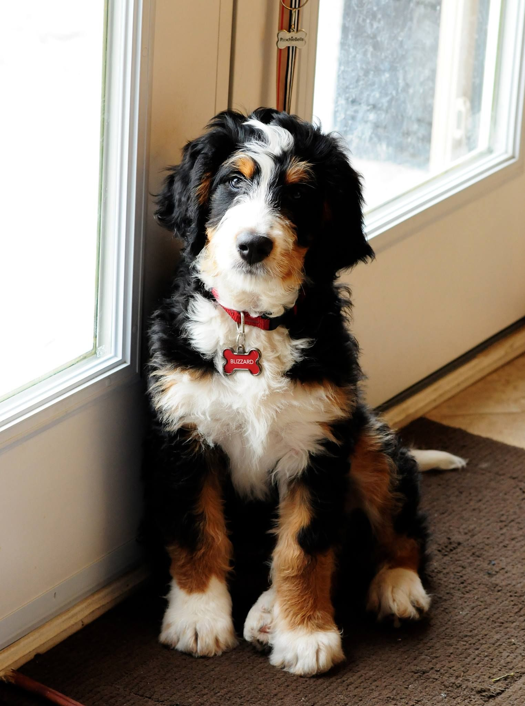
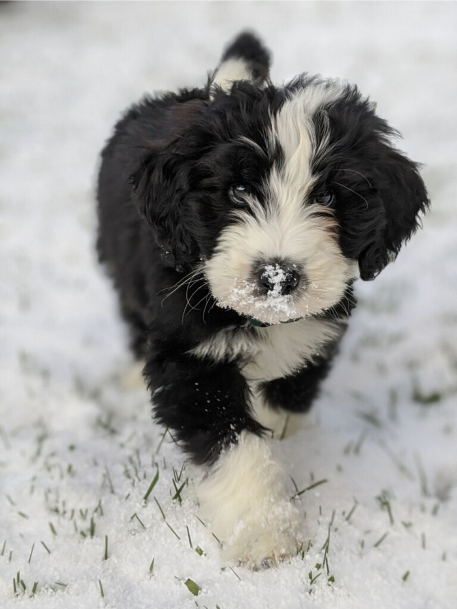

Cockapoo
Labradoodle
Schnoodle
Maltipoo
Aussiedoodle
Goldendoodle
Golden Mountain Dog
Bordernese
Bernsky
Labernese
Great Bernese
Saint Bernese
List of Poodle Breeds:
List of Berneese Mountain Dog Breeds:
About the Breed:
Like other happy-go-lucky doodle varieties, the Bernedoodle is goofy, playful, and a bit mischievous! And like their Poodle parents, they come in three different sizes - ensuring that there is a perfect Bernedoodle for you! Standard Bernedoodles are large and may weigh up to 90 pounds, while the Mini and Toy varieties are much smaller. In fact, Toy Bernedoodles may be as tiny as 10 pounds!
